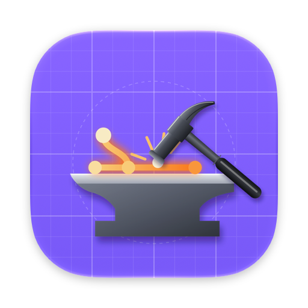
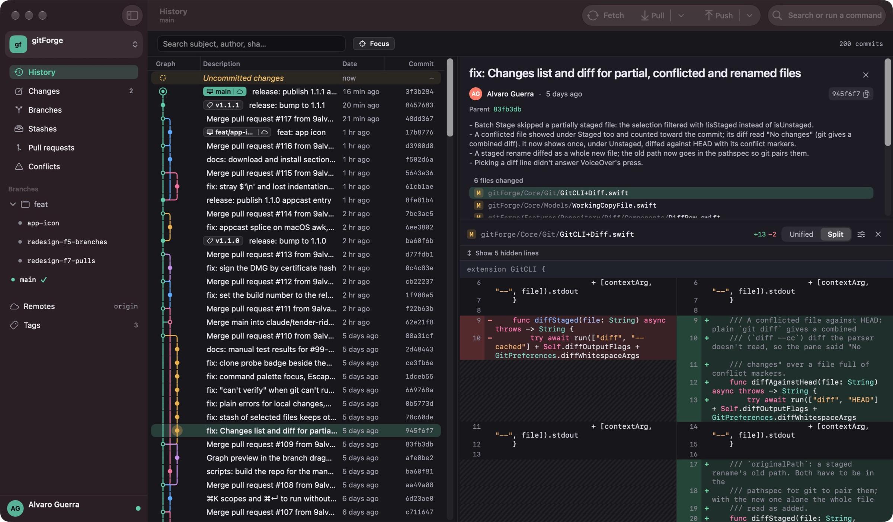
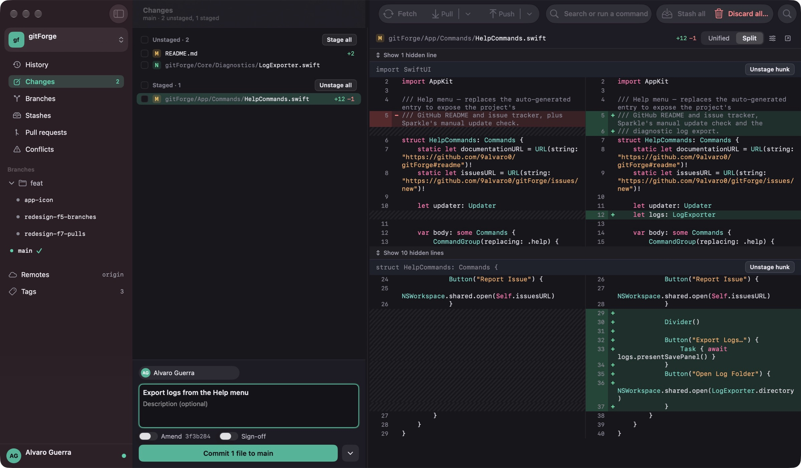
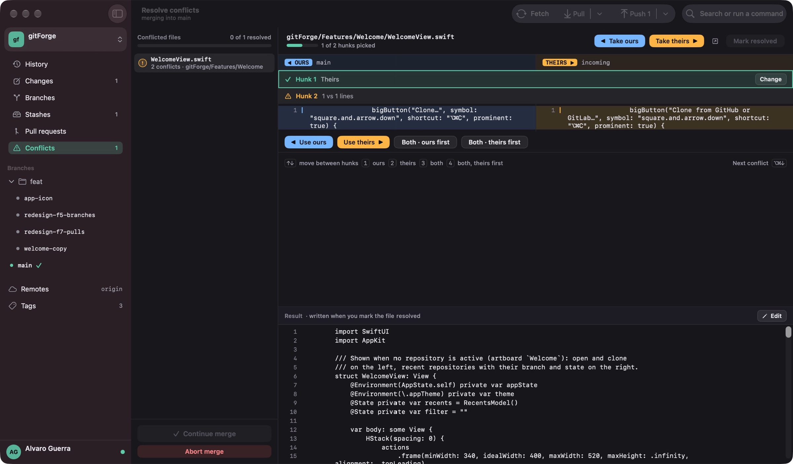
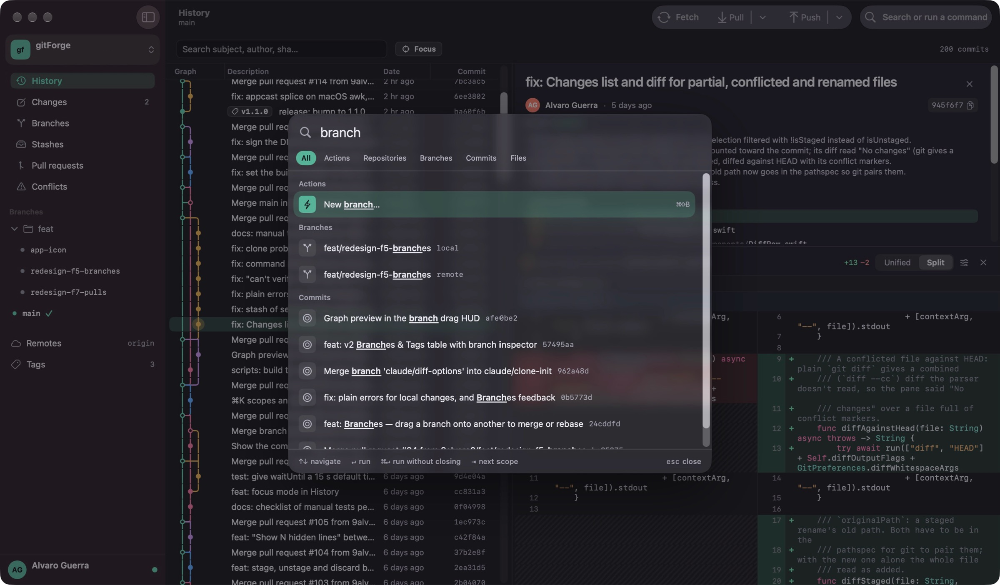

A native Git client for macOS
Fast, focused and built with SwiftUI. Your history, changes, branches and conflicts in one window, with nothing in the way.

Features
Everything you do with Git, in one window
gitForge runs the git you already have and stays out of your way. No accounts to create, nothing to configure first.
Stage exactly what you mean
Review every change in a unified or side-by-side diff and build the commit you want.
- Stage, unstage and discard by file, by hunk or by line.
- Stash just the files you select, and filter long lists.
- Commit with amend and sign-off, or press ⌘ ↩.

Resolve conflicts without leaving the app
Merges, rebases, cherry-picks and stash pops all land in the same resolver.
- Pick ours, theirs or both for each hunk, or take a whole file.
- Edit the result by hand before you mark it resolved.
- Jump to the next conflict with ⌥ ⌘ ↓.

Everything is a keystroke away
The command palette finds actions, repositories, branches, commits and files as you type.
- Open it from anywhere with ⌘ K.
- Narrow the results to one scope with ⇥.
- Run an action and keep the palette open with ⌘ ↩.

A graph you can read
Branches, tags and stashes on colour-coded lanes. Focus mode dims everything that isn't part of the selected commit's history.
Drag to merge or rebase
Drop one branch onto another and see the resulting graph before you choose to merge or rebase.
Pull requests and CI
Open and closed pull requests from GitHub and GitLab, self-hosted included, with checks, approvals and each commit's CI status.
One account per remote
Connect your GitHub and GitLab accounts once. Every repository uses the right one for fetch, push, clone and pull requests.
Stashes you can browse
Every stash with its files and diffs, untracked files included. Apply, pop or drop it with confidence.
Made for everyone
VoiceOver labels and actions, Increase Contrast and Reduce Motion, light and dark themes, and your choice of accent.
Native by design
Feels like it belongs on your Mac
gitForge is written in Swift and SwiftUI, uses the git installed on your system and keeps your data on your machine.
Get gitForge
Free for macOS 26.1 or later. Open the DMG, drag gitForge to Applications and open your first repository.